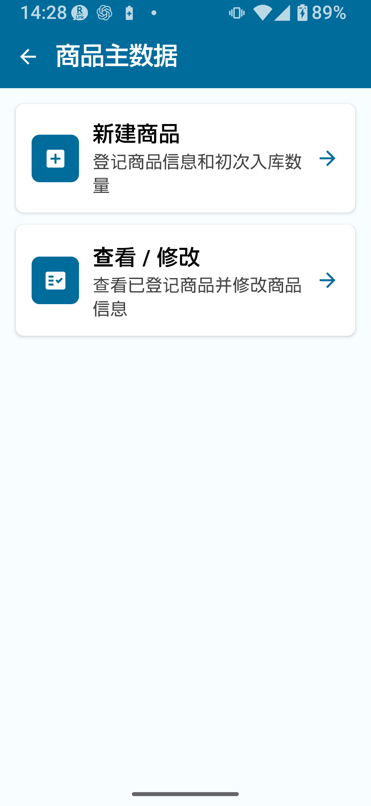
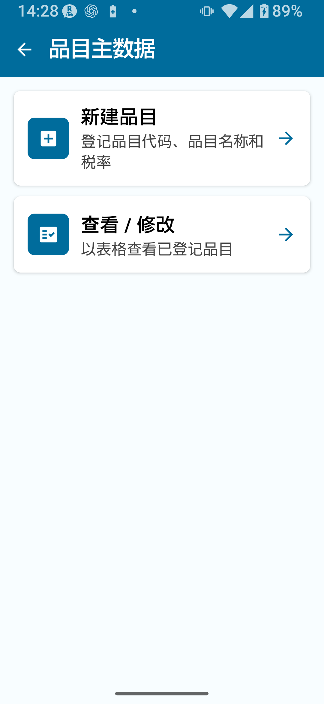
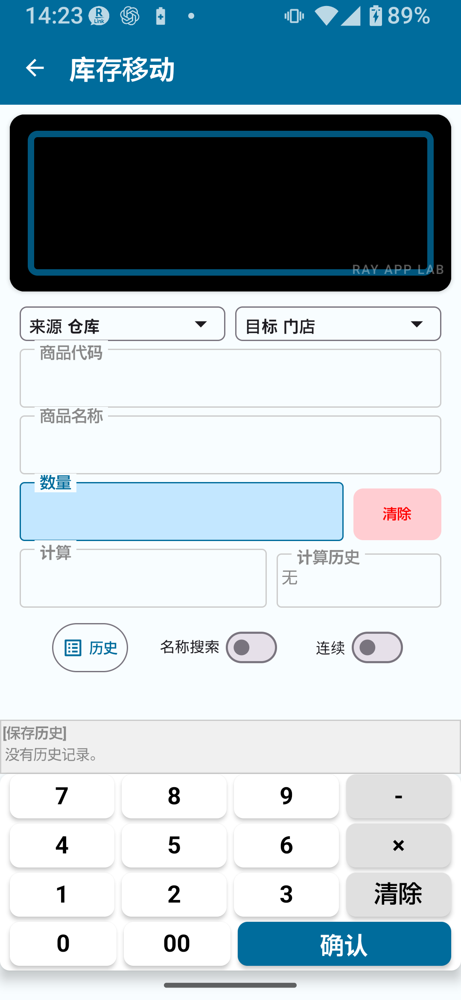
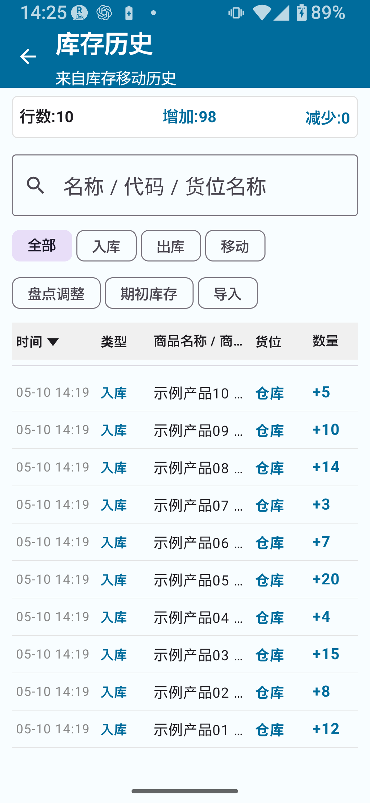
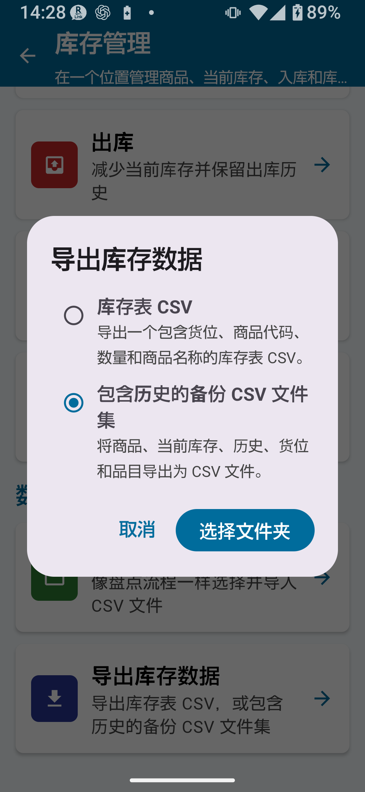

库存完整版解锁移除主数据记录数、历史条目及导出行数的所有限制，并启用标准版中不可用的所有高级功能。核心新增功能包括：多位置管理（仓库、门店等）、位置间库存调拨、将盘点结果直接应用至库存，以及完整的CSV 备份与恢复。
完整版解锁解锁的功能
- 主数据记录数、历史条目及导出行数不再受限
- 商品主数据中的补货参考值和价格字段
- 类别主数据（商品分类管理）
- 位置主数据的登记与管理
- 库存调拨（在位置间移动数量）
- 将盘点结果反映到库存
- CSV 备份与恢复（库存表 + 完整备份CSV集）
- 历史记录备份
- 直接编辑已登记累计量
- 编码规则、位置规则及摄像头扫描设置（完整版共享设置）
- 扩展 CSV选项（列选择和导入模式选择）
说明："完整版解锁"与"完整版"含义相同本文档中"完整版解锁"与"完整版"可互换使用。套餐购买详情请参阅
① 主屏幕与设置中的"套餐说明"部分。
| 功能 | 免费版 | 标准版 | 完整版 |
|---|
| 库存查询 | ✓ | ✓ | ✓ |
| 入库/出库 | ✗ | ✓ | ✓ |
| 主数据记录上限 | 30条 | 300条 | 不限 |
| 库存调拨 | ✗ | ✗ | ✓ |
| 将盘点结果反映到库存 | ✗ | ✗ | ✓ |
| 类别主数据 | ✗ | ✗ | ✓ |
| 补货参考值与价格 | ✗ | ✗ | ✓ |
| CSV 备份与恢复 | ✗ | 受限 | ✓（完整集） |
| 历史记录备份 | ✗ | ✗ | ✓ |
| 编码规则与位置规则 | ✗ | ✗ | ✓（完整版共享设置） |
提示标准版的核心操作——入库、出库、库存查询、库存历史及CSV 导入导出——详见
⑥ 库存管理：标准版。本页仅介绍完整版新增功能。
商品主数据用于登记您管理库存的实际商品。使用完整版解锁后，可为每件商品添加补货参考值和价格。
商品主数据关键字段
| 字段 | 说明 | 完整版新增 |
|---|
| 商品编码/条码 | 商品的唯一标识符 | — |
| 商品名称 | 商品名称 | — |
| 类别 | 商品分类（从类别主数据中选择） | — |
| 价格 | 商品售价或成本价 | ✓ |
| 补货参考值 | 用于判断补货时机的参考数量 | ✓ |

商品主数据界面（完整版）
登记或编辑商品
- 从主屏幕打开主数据管理。
- 选择商品主数据。
- 点击新建卡片或新建按钮。
- 输入商品编码、名称和类别，可选填写价格和补货参考值。
- 点击保存完成登记。
- 编辑已有商品时，在列表中打开对应行，修改后点击保存。
从入库界面登记未知商品在入库界面输入未登记的商品编码时，应用会跳转至商品主数据新建表单。保存商品名称、价格和补货参考值后，将自动返回入库界面并填入商品信息。
注意：商品与类别请勿混淆
- 商品：库存中持有的单个品项（如红色钢笔、蓝色钢笔）
- 类别：商品分类组别（如文具、食品）
类别在商品主数据中作为商品的分类被选择，类别本身不持有库存。
类别主数据管理用于组织商品的分类组别。类别可帮助筛选和查看商品主数据。
类别主数据关键字段
| 字段 | 说明 |
|---|
| 类别编码 | 类别的唯一标识符 |
| 类别名称 | 分类名称（如食品、服装） |
| 分类 | 用于在列表和主数据中整理商品的分组 |
| 显示顺序 | 列表视图中的排序顺序 |

类别主数据界面（完整版）
登记类别
- 进入主数据管理 → 类别主数据。
- 点击新建卡片或新建按钮。
- 输入类别编码、类别名称和显示顺序。
- 点击保存。
位置主数据用于登记和管理库存的实物存放地点。通过登记多个位置（如仓库、零售区或各个货架），可按位置追踪库存。
位置主数据关键字段
| 字段 | 说明 |
|---|
| 位置编码 | 位置的唯一标识符 |
| 位置名称 | 位置名称（如仓库、门店A） |
| 显示顺序 | 列表视图中的排序顺序 |
| 计入补货参考判断 | 启用后，该位置的库存将被计入库存查询界面的补货参考判断合计中 |
| 启用/停用 | 不再使用的位置可以停用而不删除 |
默认位置应用预置了"仓库"和"门店"两个默认位置。可根据实际运营情况重命名、编辑或新增位置。
登记位置
- 进入主数据管理 → 位置主数据。
- 点击新建卡片或新建按钮。
- 输入位置编码、位置名称和显示顺序。
- 按需开启或关闭计入补货参考判断。新建条目默认为开启。
- 点击保存。
注意：停用与删除位置位置不再需要时，建议停用而非删除。删除或覆盖记录前，请先导出备份并查看对库存的影响。
库存调拨将指定数量的库存从一个位置移至另一个位置，仅完整版可用。

库存调拨界面
库存调拨操作步骤
- 从库存管理菜单打开库存调拨。
- 选择来源位置（调出位置）。
- 选择目标位置（调入位置）。
- 通过扫描条码或按名称搜索找到目标商品。
- 输入调拨数量。
- 核对详情后点击确认。
重要：严禁在同一位置之间调拨将来源位置和目标位置选为同一个位置，会导致库存数据处理错误。请务必选择两个不同的位置。
仅有一个位置时只登记了一个位置时，库存调拨无实际意义。请改用入库、出库或编辑来调整数量。库存调拨仅在有两个或以上位置时才有意义。
库存历史提供库存每次变动的完整记录。完整版解锁后，历史条目上限解除，可保存长期记录。
历史中记录的操作类型
- 入库：收入库存的货物
- 出库：从库存中发出的货物
- 调拨：位置间移动的库存
- 盘点调整：应用盘点结果时的差异修正
- 期初库存：初始登记时设置的开始数量
- CSV 导入：通过CSV 文件导入更新的库存

库存历史界面（完整版）
将实物盘点（清点）结果应用至库存管理模块，可使系统库存与货架实际库存保持一致，仅完整版可用。
将盘点结果应用至库存后，理论库存水平与实际盘点数量之间的差异将以盘点调整条目记入历史，同时将库存更新至实际盘点数量并保留可追溯的调整记录。
应用条件与复核仅在确认画面条件满足时执行应用。继续前请复核受影响的位置、调整详情和备份 CSV。
重要：反映前务必备份反映盘点结果会覆盖库存数量。执行此操作前请务必导出CSV 备份。完成应用后的撤销能力可能受限。
完整版解锁提供三种导出类型：库存表CSV、完整备份CSV集和历史记录备份。恢复和替换操作会对数据进行大范围变更，执行前请务必仔细核对。
CSV类型及其用途
| CSV类型 | 用途 | 主要内容 | 可用版本 | 备注 |
|---|
| 库存表CSV | 查看并重新导入当前库存清单 | 位置、商品编码、商品名称、数量 | 标准版及以上 | 无位置列时，导入时选择目标位置 |
| 完整备份CSV集 | 完整数据集备份与恢复 | 商品、当前库存、入库/出库/调拨/调整历史、位置、类别 | 完整版 | 可能导出为多个文件 |
| 历史记录备份 | 供事后查看库存变动的备份 | 库存表 + 完整操作历史 | 完整版 | 历史记录CSV的重新导入行为需确认 |

CSV 导出模式选择画面
导出完整备份CSV集
- 从设置界面或主菜单打开CSV 导入/导出。
- 选择完整备份CSV集。
- 选择目标文件夹（按屏幕提示操作）。
- 点击导出，确认完成提示。
从CSV 备份恢复
- 进入CSV 导入/导出 → 恢复或CSV 导入。
- 选择备份CSV 文件。
- 确认列映射（应用可能自动识别）。
- 仔细查看确认界面后点击执行。
重要：恢复或替换前务必备份当前数据CSV恢复或替换当前库存操作会覆盖现有库存数据。操作前请务必导出并保存当前库存表CSV。
替换当前库存
替换当前库存用导入CSV中的数值覆盖当前库存数量。现有历史记录保留，差异以调整历史条目记入。CSV中未包含的库存行可能被设为0，导入前请务必核实CSV内容。
谨慎使用替换当前库存CSV中不存在的商品或位置可能被设为库存0。导入前请确认CSV中包含正确的商品和位置集合。
历史记录备份在一次操作中同时导出库存表和库存变动的完整记录——入库、出库、调拨、调整等，用于事后审计或追溯库存变化时使用。
- 库存表CSV（当前库存数量）
- 完整操作历史（入库、出库、调拨、盘点调整、CSV 导入）
重新导入历史记录备份CSV重新导入历史记录备份前，请检查所选文件、导入模式和应用的确认画面。
运营建议定期（每周或每月）执行历史记录备份，一旦出现问题，可追溯库存水平的变化过程，实现更精准的恢复。
补货参考值
在商品主数据中设置补货参考值，为您提供一个参考阈值：当库存低于该值时，可一眼看出需要补货。这是辅助管理补货时机的指标。
库存查询界面的补货参考判断库存查询界面默认显示各商品合计。补货参考判断将"计入补货参考判断"已开启的所有位置的合计库存与商品补货参考值进行比较。按单个位置分项查看库存时，补货参考判断不显示或被视为未激活。
价格
可在商品主数据中为每件商品登记价格，计算库存总价值或生成报表时会引用该价格。货币设置和舍入方式的详细信息需确认。
与类别配合使用
将商品关联至类别后，商品主数据和列表更容易按商品类型整理与查看。
注意价格信息及相关计算是本应用内的功能。是否适用于业务记录，请另行确认。
示例1：管理两个位置——仓库与门店
- 在位置主数据中登记"仓库"和"门店A"。
- 在商品主数据中登记商品，并设置仓库的期初库存。
- 门店需要补货时，使用库存调拨将库存从仓库移至门店A。
- 门店销售后，通过出库记录减少量。
- 定期盘点，使用反映盘点结果使系统库存与实际清点数保持一致。
- 每月导出历史记录备份并存档。
示例2：定期盘点周期
- 月末使用盘点应用（盘点完整版）输入实际清点数量。
- 确认实际盘点结果。
- 使用反映盘点结果将差异推入库存模块。
- 在库存历史中查看盘点调整条目，确认变更。
- 导出并保存完整备份CSV集。
CSV替换当前库存替换当前库存会用CSV中的数值覆盖库存数量。CSV中未包含的商品可能被设为库存0。执行此操作前请务必导出备份CSV。
反映盘点结果反映盘点结果会重写库存数量。已完成的应用能否撤销需确认。执行此操作前请务必导出备份CSV。
删除或覆盖主数据记录从商品主数据或位置主数据中删除条目可能影响库存数据。记录不再需要时，建议停用而非删除，并在进行影响较大的更改前保留备份 CSV。
库存调拨：来源和目标必须不同调拨时切勿将来源位置和目标位置选为同一个。否则可能导致意外的数据变更。
出库界面的库存字段出库界面显示的库存数量仅供参考——显示的是当前库存水平，不可编辑。保存出库数量后，所选位置的库存相应减少。
价格与购买条款完整版解锁的购买价格和销售条款，请参阅Google Play上的商品列表。本文档不包含任何价格信息。
运营原则
- 对库存进行大规模变更的操作（替换、应用、删除）前，务必先备份。
- CSV 导入时，执行前请查看预览或确认界面。
- 仅有一个位置时，请使用入库、出库或编辑，而非库存调拨。
📌 本章要点
- 完整版解锁移除所有记录和历史上限，并启用补货参考值、价格、类别主数据、位置管理、库存调拨、盘点应用及CSV 备份。
- 三类主数据协同工作：商品主数据（库存商品）、类别主数据（分类组别）、位置主数据（存放地点）。
- 库存调拨仅在两个不同位置间有效，切勿将同一位置作为来源和目标。
- 反映盘点结果可使实际盘点数与系统库存同步，差异以盘点调整历史条目记录。
- 替换当前库存、反映盘点结果或删除等不可逆操作前，务必备份。
- 定期（每周或每月）执行历史记录备份，可降低数据无法恢复的风险。
使用前检查
- 反映盘点结果的精确条件（时机、多位置处理、撤销行为）
- 通过重新导入历史记录备份CSV恢复库存的流程和行为
- 库存低于补货参考值时是否会显示相关提示，以及其行为
- 价格的货币设置和舍入方式
- 商品和位置主数据记录能否删除，以及已删除记录能否恢复
- 完整版解锁的购买价格和销售条款（在Google Play上确认）
- 已确认的库存调拨能否撤销